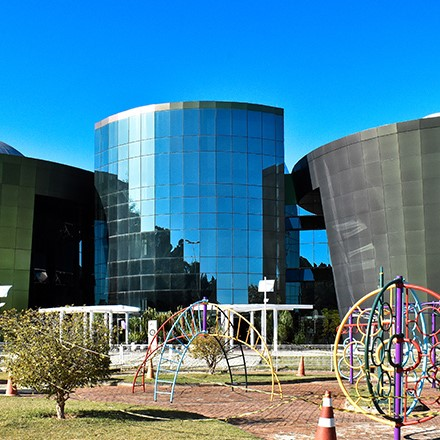

O Curso Marca Texto surgiu em meados de 2020, com o objetivo de ser um parceiro ON-LINE dos alunos, complementando os estudos no ENSINO-MÉDIO, e auxiliando na preparação para o PISM da UFJF. Com uma vasta experiência em vestibulares seriados e provas do ENEM, formamos uma equipe de professores de Juiz de Fora qualificados e muito competentes.
O Programa de Ingresso Seletivo Misto (PISM) é um processo de avaliação seriada, em que os candidatos às vagas oferecidas pela UFJF participam de três módulos de avaliação (I, II e III), um ao final de cada ano do Ensino Médio. Esse sistema busca uma maior interação entre o Ensino Médio e o Superior, já que avalia os conhecimentos do estudante ano a ano, sendo cobrado, em cada prova, conteúdo acumulativo dos anos anteriores. Por ser um processo de avaliação seriada, o PISM permite ao candidato aprimorar seu desempenho ao longo das etapas, baseando-se no resultado que recebe a cada módulo concluído. Com isso, ele pode avaliar quais os conteúdos que precisam de uma maior atenção e corrigir as falhas, sem sair prejudicado.

A Universidade Federal de Juiz de Fora (UFJF) é uma instituição de ensino superior pública federal brasileira. Sua sede situa-se em Juiz de Fora, no estado de Minas Gerais. A UFJF reúne na atualidade 16 unidades acadêmicas, agregando 36 cursos de graduação, 29 cursos de mestrados acadêmicos, três mestrados do tipo profissional e 17 cursos de doutorado, com quase 19 mil alunos matriculados. A qualidade da graduação da UFJF é reconhecida nacionalmente, tem sido atestada de forma indiscutível pelos processos de avaliação implementados pelo Ministério da Educação e Cultura nos últimos anos. O crescimento da graduação, tem sido um dos instrumentos pelos quais a UFJF tem procurado tornar-se mais inclusiva, tendo realizado duas formas de processo seletivo: atualmente o SISU e o PISM(Programa de Ingresso Seletivo Misto), que aumentam as chances do aluno de entrar na Universidade.